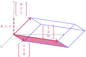

Compute the determinant of a \(4\times 4\) matrix.
Subsection5.2.1Class Activities
Remark5.2.1.
Weve seen that row reducing all the way into RREF gives us a method of computing determinants.
However, we learned in Chapter1 that this can be tedious for large matrices. Thus, we will try to figure out how to turn the determinant of a larger matrix into the determinant of a smaller matrix.
Activity5.2.2.
The following image illustrates the transformation of the unit cube by the matrix \(\left[\begin{array}{ccc} 1 & 1 & 0 \\ 1 & 3 & 1 \\ 0 & 0 & 1\end{array}\right]\text{.}\)

Figure62.Transformation of the unit cube by the linear transformation.
Recall that for this solid \(V=Bh\text{,}\) where \(h\) is the height of the solid and \(B\) is the area of its parallelogram base. So what must its volume be?
If row \(i\) contains all zeros except for a \(1\) on the main (upper-left to lower-right) diagonal, then both column and row \(i\) may be removed without changing the value of the determinant.
Since row and column operations affect the determinants in the same way, the same technique works for a column of all zeros except for a \(1\) on the main diagonal.
Remove an appropriate row and column of \(\det \left[\begin{array}{ccc} 1 & 0 & 0 \\ 1 & 5 & 12 \\ 3 & 2 & -1 \end{array}\right]\) to simplify the determinant to a \(2\times 2\) determinant.
Activity5.2.6.
Simplify \(\det \left[\begin{array}{ccc} 0 & 3 & -2 \\ 2 & 5 & 12 \\ 0 & 2 & -1 \end{array}\right]\) to a multiple of a \(2\times 2\) determinant by first doing the following:
(a)
Factor out a \(2\) from a column.
(b)
Swap rows or columns to put a \(1\) on the main diagonal.
Activity5.2.7.
Simplify \(\det \left[\begin{array}{ccc} 4 & -2 & 2 \\ 3 & 1 & 4 \\ 1 & -1 & 3\end{array}\right]\) to a multiple of a \(2\times 2\) determinant by first doing the following:
(a)
Use row/column operations to create two zeroes in the same row or column.
(b)
Factor/swap as needed to get a row/column of all zeroes except a \(1\) on the main diagonal.
Observation5.2.8.
Using row/column operations, you can introduce zeros and reduce dimension to whittle down the determinant of a large matrix to a determinant of a smaller matrix.
Another option is to take advantage of the fact that the determinant is linear in each row or column. This approach is called Laplace expansion or cofactor expansion.
Recall the formula for a \(2\times 2\) determinant found in Observation5.1.30:
\begin{equation*}
\det \left[\begin{array}{cc} a & b \\ c & d \end{array}\right]
=
ad-bc\text{.}
\end{equation*}
There are formulas and algorithms for the determinants of larger matrices, but they can be pretty tedious to use. For example, writing out a formula for a \(4\times 4\) determinant would require 24 different terms!
Prove that the equation of a line in the plane, through points \((x_1,y_1), (x_2,y_2)\text{,}\) when \(x_1 \neq x_2\) is given by the equation \(\mbox{det}\left(\begin{array}{ccc}x&y&1\\x_1&y_1&1\\x_2&y_2&1\end{array}\right) = 0.\)
Exploration5.2.17.
Prove that the determinant of any diagonal matrix, upper triangular matrix, or lower triangular matrix, is the product of its diagonal entries.
Exploration5.2.18.
Show that, if an \(n \times n\) matrix \(M\) has a non-zero determinant, then any \(\vec{v} \in \mathbb{R}^n\) can be represented as a linear combination of the columns of \(M\text{.}\)
Exploration5.2.19.
What is the smallest number of zeros necessary to place in a \(4 \times 4\) matrix, and the placement of those zeros, such that the matrix has a zero determinant?